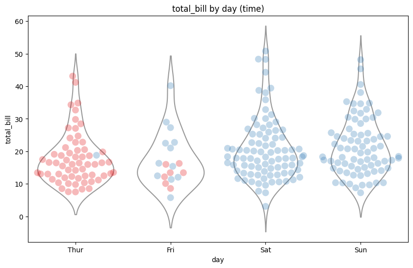
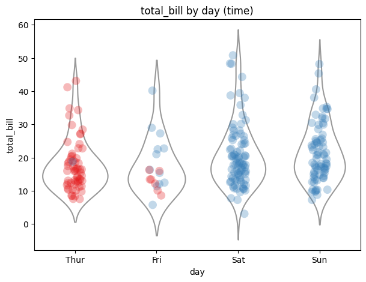
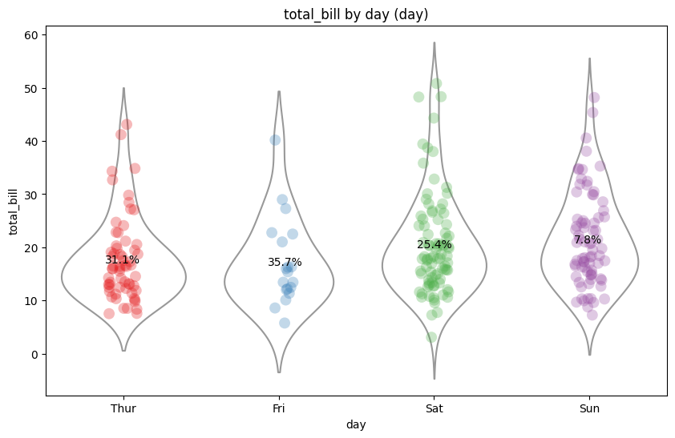
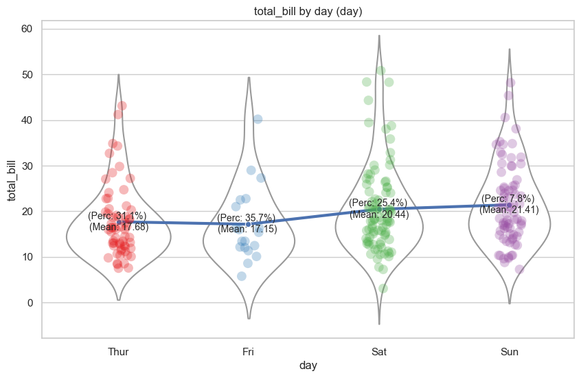

import seaborn as snsimport matplotlib.pyplot as pltdef generate_swarm_violin(data, x, y, hue):# Set figure size plt.figure(figsize=(10,6))# Create the beeswarm plot with different colors for each day and time ax = sns.swarmplot(x=x, y=y, data=data, palette="Set1", hue=hue, alpha=0.3, size=10)# Add violin plot to the same axes sns.violinplot(x=x, y=y, data=data, inner=None, color="white", ax=ax)# Hide the legend ax.legend_.remove()# Add title and labels plt.title(f"{y} by {x} ({hue})") plt.xlabel(x) plt.ylabel(y)# Show the plot plt.show()generate_swarm_violin(data=tips, x="day", y="total_bill", hue="time")

Strip-violin plot
import seaborn as snsimport matplotlib.pyplot as pltdef generate_strip_violin(data, x, y, hue):# Set figure size plt.figure(figsize=(7,5))# Create the strip plot with different colors for each category ax = sns.stripplot(x=x, y=y, data=data, palette="Set1", hue=hue, alpha=0.3, size=10)# Add violin plot to the same axes sns.violinplot(x=x, y=y, data=data, inner=None, color="white", ax=ax)# Hide the legend ax.legend_.remove()# Add title and labels plt.title(f"{y} by {x} ({hue})") plt.xlabel(x) plt.ylabel(y)# Show the plot plt.show()# Load the datatips = sns.load_dataset("tips")generate_strip_violin(data=tips, x="day", y="total_bill", hue="time")

Strip-violin plot with percentage of category
import seaborn as snsimport matplotlib.pyplot as pltdef generate_strip_violin(data, x, y, hue):# Set figure size plt.figure(figsize=(10, 6))# Create the strip plot with different colors for each category ax = sns.stripplot(x=x, y=y, data=data, palette="Set1", hue=hue, alpha=0.3, size=10)# Add violin plot to the same axes sns.violinplot(x=x, y=y, data=data, inner=None, color="white", ax=ax)# Get unique categories in the hue variable unique_categories = data[hue].unique()# Add percentage labels to the plot for each categoryfor i, category inenumerate(unique_categories):# Get the collection for the current category collection = ax.collections[i]# Get the x and y positions of the points x_pos = collection.get_offsets()[:, 0] y_pos = collection.get_offsets()[:, 1]# Calculate the percentage of the category in the data percentage =len(data.loc[(data[x] == category) & (data[hue] == category)]) /len(data) *100 text =f"{percentage:.1f}%" ax.annotate(text, xy=(x_pos.mean(), y_pos.mean()), fontsize=10, ha='center', va='center')# Hide the legend ax.legend_.remove()# Add title and labels plt.title(f"{y} by {x} ({hue})") plt.xlabel(x) plt.ylabel(y)# Show the plot plt.show()# Load the datatips = sns.load_dataset("tips")generate_strip_violin(data=tips, x="day", y="total_bill", hue="day")

Strip-violin plot
add percentage of category
add mean value
add line graph
import seaborn as snsimport matplotlib.pyplot as pltdef generate_strip_violin(data, x, y, hue):# Set figure size plt.figure(figsize=(10, 6))# Create the strip plot with different colors for each category ax = sns.stripplot(x=x, y=y, data=data, palette="Set1", hue=hue, alpha=0.3, size=10)# Add violin plot to the same axes sns.violinplot(x=x, y=y, data=data, inner=None, color="white", ax=ax)# Get unique categories in the hue variable unique_categories = data[hue].unique()# Add percentage labels to the plot for each category xline = [] yline = []for i, category inenumerate(unique_categories):# Get the collection for the current category collection = ax.collections[i]# Get the x and y positions of the points x_pos = collection.get_offsets()[:, 0] y_pos = collection.get_offsets()[:, 1] xline.append(x_pos.mean())# Calculate the percentage of the category in the data percentage =len(data.loc[(data[x] == category) & (data[hue] == category)]) /len(data) *100# Calculate the mean of the 'numeric_column' within the current category mean_value = data[data[hue] == category][y].mean() yline.append(y_pos.mean())#text = f"{percentage:.1f}%" text =f"(Perc: {percentage:.1f}%) \n(Mean: {y_pos.mean():.2f})" ax.annotate(text, xy=(x_pos.mean(), y_pos.mean()), fontsize=10, ha='center', va='center') sns.lineplot(x=xline, y=yline, markers=True, linewidth=3, dashes =True, marker='o')# Hide the legend ax.legend_.remove()# Add title and labels plt.title(f"{y} by {x} ({hue})") plt.xlabel(x) plt.ylabel(y)# Show the plot plt.show()# Load the datatips = sns.load_dataset("tips")generate_strip_violin(data=tips, x="day", y="total_bill", hue="day")

Plot correlation between 2 categorical variables
import pandas as pdimport numpy as np# Generate random datanp.random.seed(0)# Number of data pointsn =1000# Create a DataFramedata = pd.DataFrame({'ltv': np.random.uniform(0, 1, n), # Random 'ltv' values between 0 and 1'rating': np.random.choice(['A', 'B', 'C', 'D', 'E', 'F', 'G', 'H', 'I', 'J'], n)})# Calculate the 'ltv_decile' using quantilesdecile_labels = [f'[{i/10:.1f}, {(i+1)/10:.1f})'for i inrange(10)]data['ltv_decile'] = pd.qcut(data['ltv'], 10, labels=decile_labels)# Display the first few rows of the DataFrameprint(data.head())
ltv rating ltv_decile
0 0.548814 B [0.5, 0.6)
1 0.715189 G [0.7, 0.8)
2 0.602763 F [0.6, 0.7)
3 0.544883 E [0.5, 0.6)
4 0.423655 E [0.4, 0.5)
import pandas as pdimport matplotlib.pyplot as pltdef plot_rating_ltv(data, category_var, numeric_var, num_quantiles, list_categories):# Make a copy of the input data and filter it based on the list of categories data = data.copy() data = data[data[category_var].isin(list_categories)]# Generate the 'decile' column name based on numeric_var and num_quantiles decile_col_name =f'{numeric_var}_decile_{num_quantiles}'# Calculate the 'decile' using quantiles and the generated column name decile_labels = [f'[{i/num_quantiles:.1f}, {(i+1)/num_quantiles:.1f})'for i inrange(num_quantiles)] data[decile_col_name] = pd.qcut(data[numeric_var], num_quantiles, labels=decile_labels)# Group the data by 'rating' and 'ltv_decile' and count the occurrences rating_ltv_counts = data.groupby([category_var, decile_col_name]).size().unstack(fill_value=0)# Normalize the counts to percentages within each 'rating' group rating_ltv_percentages = rating_ltv_counts.div(rating_ltv_counts.sum(axis=1), axis=0) *100# Normalize the counts to cumulative percentages within each 'rating' group rating_ltv_cumulative = rating_ltv_counts.cumsum(axis=1).div(rating_ltv_counts.sum(axis=1), axis=0) *100 rating_ltv_position = rating_ltv_cumulative.rolling(window=2, axis=1, min_periods=1, center=True).mean().fillna(0)# Plot a bar chart ax = rating_ltv_percentages.plot(kind='bar', stacked=True, figsize=(10, 6))# Add percentage labels to each segmentfor column_name, column in rating_ltv_position.items():for x, y inenumerate(column):if y !=0: # Exclude labels for segments with 0% percentage = rating_ltv_percentages[column_name].values[x] ax.text(x, y, f'{percentage:.1f}%', ha='center', va='top', fontsize=8) ax.set_ylabel("Percentage") ax.set_xlabel(category_var) ax.set_title(f"Percentage of {decile_col_name} by {category_var}")# Move the legend to the right plt.legend(loc='center left', bbox_to_anchor=(1, 0.5))# Add line plots for each categoryfor category in rating_ltv_position.columns: x = rating_ltv_percentages[category] y = rating_ltv_position[category] ax.plot(x.index, y.values, label=f'{category_var}{category}', marker='o')# Display the plot plt.show()# Example usage:plot_rating_ltv(data, 'rating', 'ltv', 5, ['A', 'B', 'C'])